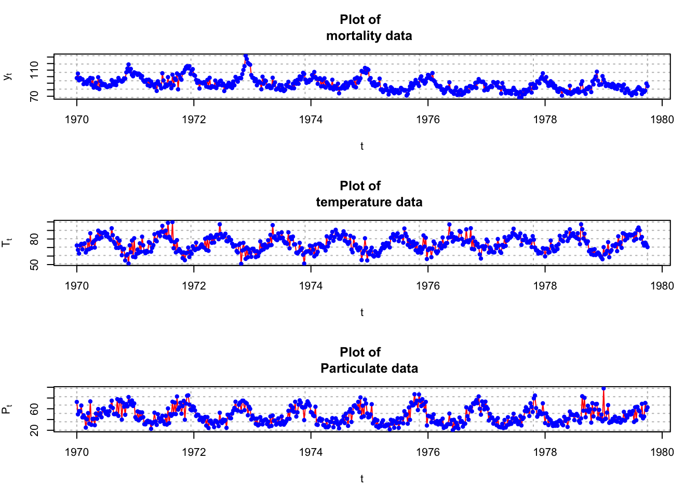
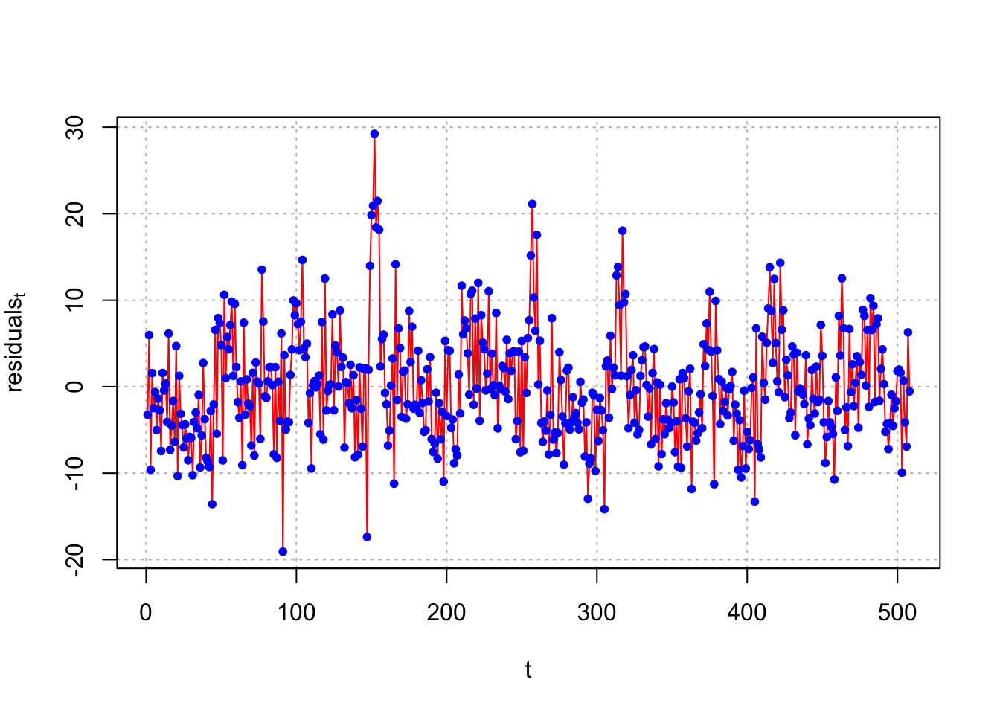
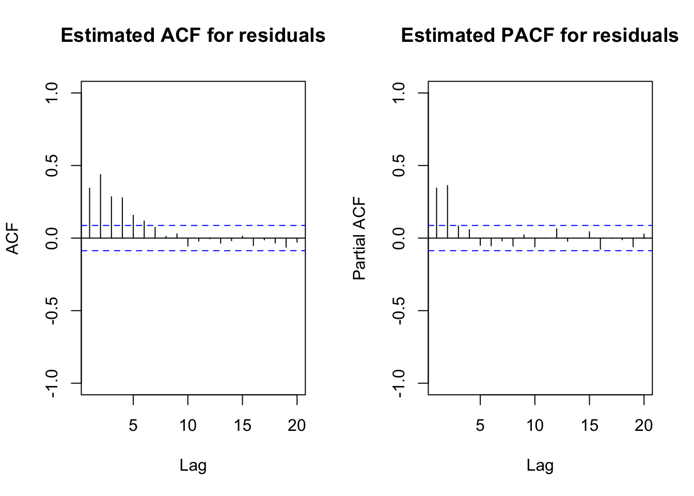
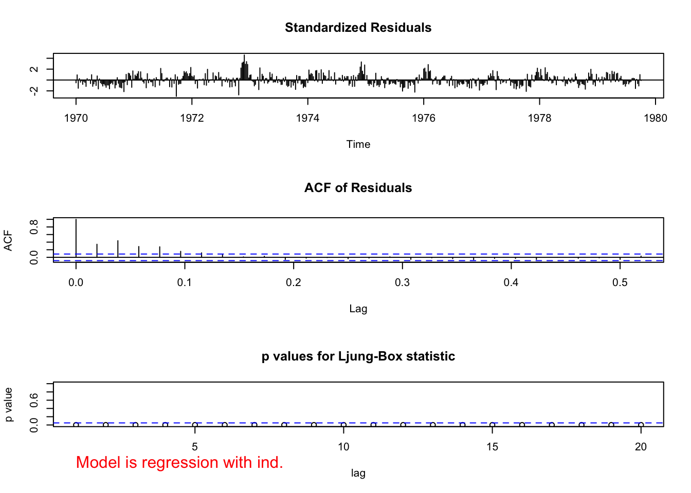
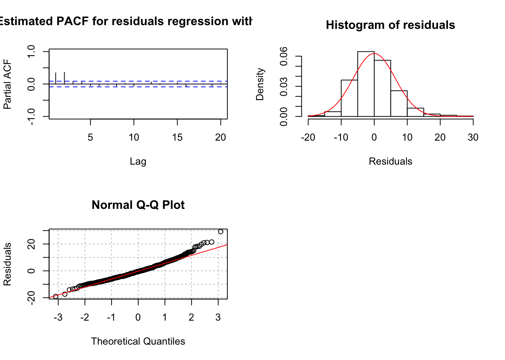
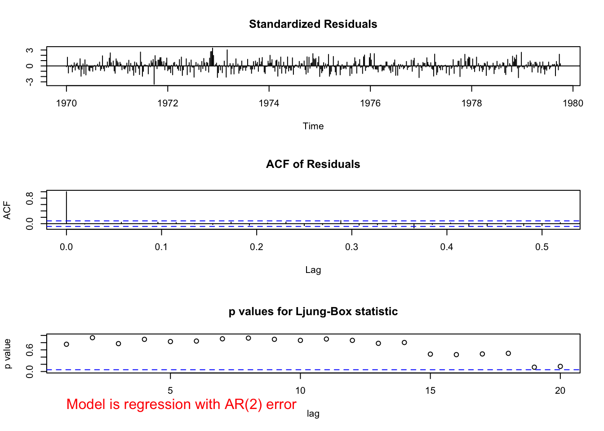
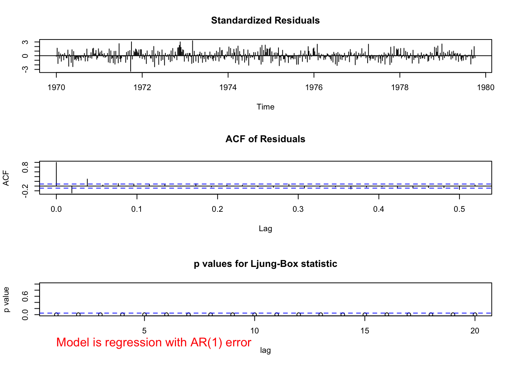
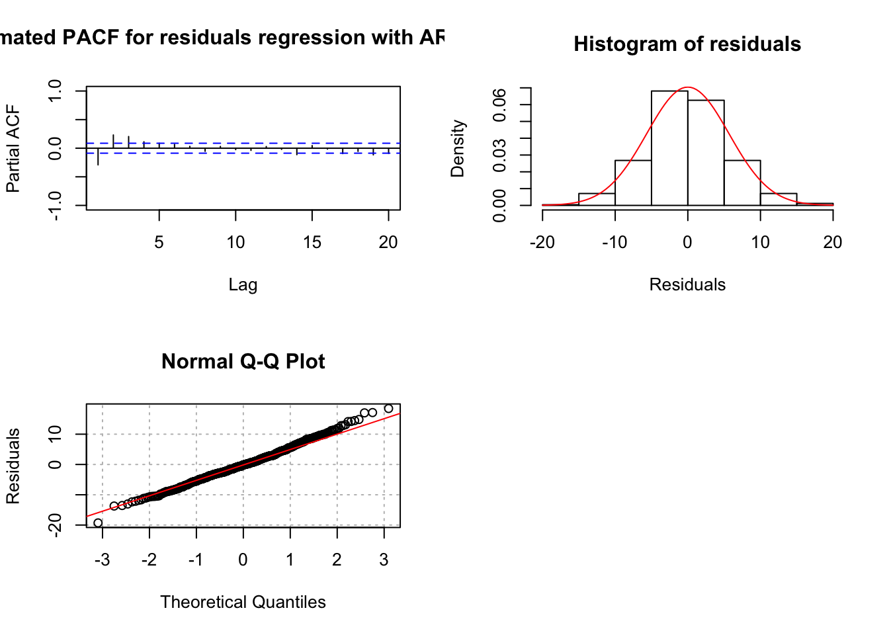
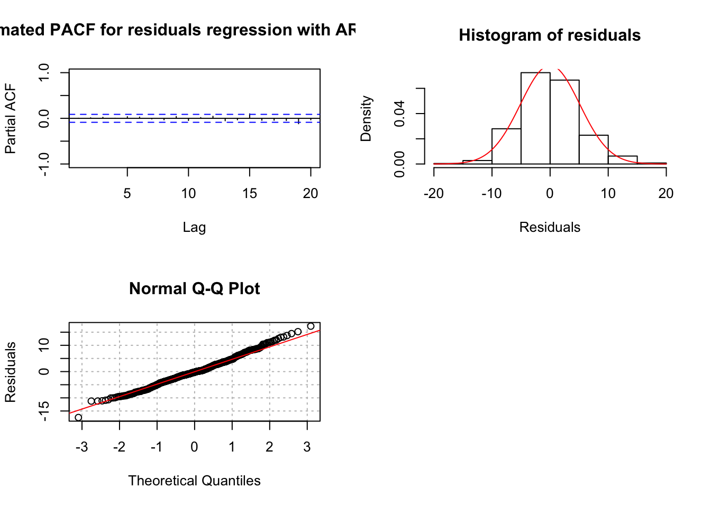

Chapter 20 Regression with ARMA Errors
Explanatory variables are incorporated into the time series model.
A regression model is typically written as
\(Y_i=\beta_0+\beta_1x_{i1}+...+\beta_rx_{ir}+\epsilon_i\)
where \(\epsilon_i\sim ind N(0,\sigma^2)\) and for i=1,…,n.
The \(x_{i1}, …, x_{ir}\) represent the explanatory variable values for observation i. In matrix form, \(\boldsymbol Y =\boldsymbol{X\beta} + \boldsymbol{\epsilon}\),
where
\[\boldsymbol Y=\begin{bmatrix} Y_1 \\Y_2 \\ \vdots \\ Y_n\end{bmatrix}, \boldsymbol X=\begin{bmatrix} 1 & x_{11} & x_{12} & \dots & x_{1r} \\ 1 & x_{21} & x_{22} & \dots & x_{2r}\\ \vdots & \vdots & \vdots & & \vdots \\ 1 & x_{n1} & x_{n2} & \dots & x_{nr} \end{bmatrix}\]
\[\boldsymbol \beta =\begin{bmatrix} \beta_0 \\ \beta_1 \\ \vdots \\ \beta_r \end{bmatrix}, \boldsymbol \epsilon =\begin{bmatrix} \epsilon_1 \\ \epsilon_2 \\ \vdots \\ \epsilon_n \end{bmatrix}\sim N(\boldsymbol 0, \boldsymbol \Sigma)\]
and \[\boldsymbol \Sigma=\begin{bmatrix} \sigma^2 & 0 & \dots & 0 \\ 0 & \sigma^2 & \dots & 0 \\ \vdots & \vdots & & \vdots \\ 0 & 0 & \dots & \sigma^2 \end{bmatrix}=\sigma^2 \boldsymbol I\]
The least squares estimate of \(\boldsymbol \beta\) is \(\boldsymbol{\hat \beta} =(\boldsymbol{X'X})^{-1}\boldsymbol{X'Y}\)
Because \(x_t\) has been used in a different way for our course, I am going to write the model as follows:
\(y_t=\beta_0+\beta_1z_{t1}+...+\beta_rz_{tr}+x_t=\boldsymbol{ \beta'z}_t+x_t\) for t = 1,…,n
where \(\boldsymbol z_t=(z_{t1},...,z_{tr})'\) and \(\boldsymbol \beta =(\beta_0,..,\beta_r)'\). In matrix form \(\boldsymbol y=\boldsymbol{Z\beta}+\boldsymbol x\), where
\[\boldsymbol y=\begin{bmatrix} y_1 \\y_2 \\ \vdots \\ y_n\end{bmatrix}, \boldsymbol Z=\begin{bmatrix} 1 & z_{11} & z_{12} & \dots & z_{1r} \\ 1 & z_{21} & z_{22} & \dots & z_{2r}\\ \vdots & \vdots & \vdots & & \vdots \\ 1 & z_{n1} & z_{n2} & \dots & z_{nr} \end{bmatrix}\]
\[\boldsymbol \beta =\begin{bmatrix} \beta_0 \\ \beta_1 \\ \vdots \\ \beta_r \end{bmatrix}, \boldsymbol x =\begin{bmatrix} x_1 \\ x_2 \\ \vdots \\ x_n \end{bmatrix}\sim N(\boldsymbol 0,\boldsymbol \Gamma)\]
\(\boldsymbol \Gamma=\begin{bmatrix} \gamma(1,1) & \gamma(1,2) & \dots & \gamma(1,n) \\ \gamma(1,2) & \gamma(2,2) & \dots & \gamma(2,n) \\\gamma(1,n) & \gamma(2,n) & \dots & \gamma(n,n) \end{bmatrix}\) is known. Note that \(\gamma(s,t)\) may not be 0 for s ≠ t
What are the elements of \(\boldsymbol \Gamma\)?
Suppose \(x_t\) has an ARMA representation. Using this assumption, we could find a representation for \(\boldsymbol \Gamma\).
For example, suppose we assume \(x_t\) has an AR(1) structure.
Then \((1-\phi_1B)x_t = w_t\) where \(w_t \sim ind N(0, \sigma_w^2)\). The model could also be written as \(x_t = \phi_1x_{t-1} + w_t =\sum_{j=0}^{\infty}\phi_1^jw_{t-j}\) .
Remember the original model is \(y_t = \boldsymbol{\beta'z}_t + x_t\) for t = 1, …, n. Then the model can be written as \(y_t=\boldsymbol{\beta'z}_t+\sum_{j=0}^{\infty}\phi_1^jw_{t-j}\)
To find \(\boldsymbol \Gamma\), start finding variances and covariances for \(x_t\). These were already found previously in our course: \(Var(x_t)=\frac{\sigma_w^2}{1-\phi_1^2}\) and \(Cov(x_t,x_{t-h})=\frac{\sigma_w^2\phi_1^h}{1-\phi_1^2}\)
Therefore, the covariance matrix, \(\boldsymbol \Gamma\) has the form of \(Cov(x_t, x_{t-h}) =\frac{\sigma_w^2\phi_1^h}{1-\phi_1^2}\). Written in matrix form,
\(\boldsymbol G=\frac{\sigma_w^2}{1-\phi_1^2}=\begin{bmatrix} 1 & \phi_1 & \phi_1^2 & \dots & \phi_1^{n-2} & \phi_1^{n-1} \\ \phi_1 & 1 & \phi_1 & \dots & \phi_1^{n-3} & \phi_1^{n-2} \\ \phi_1^2 & \phi_1 & 1 & \dots & \phi_1^{n-4} & \phi_1^{n-3} \\ \vdots & \vdots & \vdots & \ddots & \vdots & \vdots \\ \phi_1^{n-2} & \phi_1^{n-3} & \phi_1^{n-4} & \dots & 1 & \phi_1 \\ \phi_1^{n-1} & \phi_1^{n-2} & \phi_1^{n-3} & \dots & \phi_1 & 1 \end{bmatrix}\)
For those of you who have studied models for repeated measures, you may have seen this as an AR(1) covariance matrix structure before.
For other ARMA models, the covariance matrix structures can be found as well.
The parameters of the model are \(\boldsymbol \beta = (\beta_1,…,\beta_r)', \sigma_w^2 , (\phi_1,…, \phi_p), (\theta_1,…, \theta_q)\). All of these need to be estimated! Again, we can use maximum likelihood estimation.
The details of the estimation process are not going to be discussed here. Brockwell and Davis’s textbook provides a small discussion.
Example 20.1 LA pollution
This example uses the LA pollution data from Shumway and Stoffer’s textbook. The authors are interested using the temperature, temperature squared, and particulates in the air to estimate cardiovascular mortality over time for LA county. The data consists of weekly observations for 10 years.
The authors do not provide information about the numerical scale for mortality, but this appears to be the number of deaths per week out of total number of individuals scale. Also, the numerical scale for the particulates is not given.
library(astsa)
# There are three separate time series, t is also created
mtp <- data.frame(cmort, tempr, part, t =1:length(cmort))
head(mtp)## cmort tempr part t
## 1 97.85 72.38 72.72 1
## 2 104.64 67.19 49.60 2
## 3 94.36 62.94 55.68 3
## 4 98.05 72.49 55.16 4
## 5 95.85 74.25 66.02 5
## 6 95.98 67.88 44.01 6#Plot of data
par(mfrow = c(3,1))
plot(x = mtp$cmort, ylab = expression(y[t]), xlab =
"t", type = "l", col = "red", lwd = 1, main = "Plot of
mortality data", panel.first = grid(col = "gray", lty =
"dotted"))
points(x = mtp$cmort, pch = 20, col = "blue")
plot(x = mtp$temp, ylab = expression(T[t]), xlab =
"t", type = "l", col = "red", lwd = 1, main = "Plot of
temperature data", panel.first = grid(col = "gray",
lty = "dotted"))
points(x = mtp$temp, pch = 20, col = "blue")
plot(x = mtp$part, ylab = expression(P[t]), xlab =
"t", type = "l", col = "red", lwd = 1, main = "Plot of
Particulate data", panel.first = grid(col = "gray", lty
= "dotted"))
points(x = mtp$part, pch = 20, col = "blue")
There are trends over time! First, let’s ignore the potential dependence and estimate a regression model assuming independent error terms. Thus, the model is
\(M_t=\beta_0+\beta_1t+\beta_2T_t+\beta_3T^2_t+\beta_4P_t+x_t\)
where
\(M_t\) = cardiovascular mortality at time t
t = time (1, …, 508)
\(T_t\) = temperature at time t
\(P_t\) = particulates at time t
\(x_t\) = error term at time t (assumed independent for each t)
# Use t here because one would expect time to help predict
mod.fit.lm <- lm(formula = cmort ~ t + tempr + I(tempr^2)
+ part, data = mtp)
summary(mod.fit.lm)##
## Call:
## lm(formula = cmort ~ t + tempr + I(tempr^2) + part, data = mtp)
##
## Residuals:
## Min 1Q Median 3Q Max
## -19.0760 -4.2153 -0.4878 3.7435 29.2448
##
## Coefficients:
## Estimate Std. Error t value Pr(>|t|)
## (Intercept) 241.242229 15.813754 15.255 < 2e-16 ***
## t -0.026844 0.001942 -13.820 < 2e-16 ***
## tempr -3.827264 0.423570 -9.036 < 2e-16 ***
## I(tempr^2) 0.022588 0.002827 7.990 9.26e-15 ***
## part 0.255350 0.018857 13.541 < 2e-16 ***
## ---
## Signif. codes: 0 '***' 0.001 '**' 0.01 '*' 0.05 '.' 0.1 ' ' 1
##
## Residual standard error: 6.385 on 503 degrees of freedom
## Multiple R-squared: 0.5954, Adjusted R-squared: 0.5922
## F-statistic: 185 on 4 and 503 DF, p-value: < 2.2e-16par(mfrow = c(1,1))
plot(x = mod.fit.lm$residuals, ylab =
expression(residuals[t]), xlab = "t", type = "l", col =
"red", lwd = 1, panel.first = grid(col = "gray", lty =
"dotted"))
points(x = mod.fit.lm$residuals, pch = 20, col = "blue")
par(mfrow = c(1,2))
acf(x = mod.fit.lm$residuals, lag.max = 20, type =
"correlation", main = "Estimated ACF for residuals",
xlim = c(1,20), ylim = c(-1,1))
pacf(x = mod.fit.lm$residuals, lag.max = 20, main =
"Estimated PACF for residuals", xlim = c(1,20), ylim =
c(-1,1))
par(mfrow = c(1,1))Notes:
The t variable is included to take into account the mean dependence over time.
The estimated model is
\(\hat M_t= 241.24 - 0.0268t - 3.8273T_t + 0.0226T_t^2 + 0.25554P_t\)
The
I()(identity) function used in theformulaargument is the standard way in R to include quadratic terms because^2is associated with specifying interaction terms.The residuals are extracted from
mod.fit.lm. There appears to be an ARMA(2,0) structure with them.Inferences should not be made with this model due to violations of independence among the error terms.
A similar model can be estimated using arima() by taking advantage of the xreg argument.
mod.fit.arima1 <- arima(x = cmort, order = c(0, 0, 0),
xreg = cbind(mtp$t, tempr, tempr^2, part))
mod.fit.arima1##
## Call:
## arima(x = cmort, order = c(0, 0, 0), xreg = cbind(mtp$t, tempr, tempr^2, part))
##
## Coefficients:
## intercept mtp$t tempr tempr^2 part
## 241.2422 -0.0268 -3.8273 0.0226 0.2553
## s.e. 15.7357 0.0019 0.4215 0.0028 0.0188
##
## sigma^2 estimated as 40.37: log likelihood = -1660.14, aic = 3332.28\(\hat \beta_0=241.2422\)
\(\hat \beta_1=-0.0268\)
\(\hat \sigma^2_w=40.37\)
par(mfrow = c(1,2))
acf(x = ts(mod.fit.arima1$residuals), lag.max = 20, type
= "correlation", main = "Estimated ACF for residuals",
xlim = c(1,20), ylim = c(-1,1))
pacf(x = ts(mod.fit.arima1$residuals), lag.max = 20, main
= "Estimated PACF for residuals", xlim = c(1,20), ylim
= c(-1,1))
par(mfrow = c(1,1))
# Notice the use of ts()Notes:
- The
cbind()function combines columns of the explanatory variable values together. - Notice the \(\beta_0\) term was included despite 1 not being specified in
cbind(). - Notice that the
ts()function was needed with the residuals so that the ACF and PACF could be plotted.
The examine.mod() function can be used to examine the model as well.
source("examine.mod.R")
examine.mod(mod.fit.obj = mod.fit.arima1, mod.name
= "regression with ind.")
## $z
## intercept mtp$t tempr tempr^2 part
## 15.330848 -13.884370 -9.080527 8.028929 13.608224
##
## $p.value
## intercept mtp$t tempr tempr^2 part
## 0.000000e+00 0.000000e+00 0.000000e+00 8.881784e-16 0.000000e+00Notice the incorrect values given for the lags on the ACF plot. The lags given on the plot below it can be used to interpret correctly. Estimate the same model but allow for an ARMA(2,0) structure for the error terms. This is the model estimated by the authors.
mod.fit.arima2 <- arima(x = cmort, order = c(2, 0, 0),
xreg = cbind(mtp$t, tempr, tempr^2, part))
mod.fit.arima2##
## Call:
## arima(x = cmort, order = c(2, 0, 0), xreg = cbind(mtp$t, tempr, tempr^2, part))
##
## Coefficients:
## ar1 ar2 intercept mtp$t tempr tempr^2 part
## 0.3848 0.4326 174.1185 -0.0292 -2.3102 0.0154 0.1545
## s.e. 0.0436 0.0400 11.9080 0.0081 0.3103 0.0020 0.0272
##
## sigma^2 estimated as 26.01: log likelihood = -1549.04, aic = 3114.07\(\hat \phi_1=0.3845\)
\(\hat \phi_2=0.4326\)
\(\hat \beta_0=174.1185\)
examine.mod(mod.fit.obj = mod.fit.arima2, mod.name
= "regression with AR(2) error")
## $z
## ar1 ar2 intercept mtp$t tempr tempr^2 part
## 8.832875 10.806154 14.621958 -3.588002 -7.445669 7.613531 5.680238
##
## $p.value
## ar1 ar2 intercept mtp$t tempr tempr^2
## 0.000000e+00 0.000000e+00 0.000000e+00 3.332219e-04 9.636736e-14 2.664535e-14
## part
## 1.345076e-08Notes:
The estimated model is
\(\hat M_t= 174.12 - 0.0292t - 2.3102T_t + 0.0154 + 0.1545P_t\) with \((1 – 0.3848B – 0.4326B^2)x_t = w_t\)
The \(\phi\) and \(\beta\) parameters are significantly different from 0. See the parameter estimation information for the test statistics and p-values.
There does not appear to be dependence among the residuals.
QQ-plot looks o.k.
What if a regression model with ARMA(1,0) terms was estimated?
mod.fit.arima3 <- arima(x = cmort, order = c(1, 0, 0),
xreg = cbind(mtp$t, tempr, tempr^2, part))
mod.fit.arima3##
## Call:
## arima(x = cmort, order = c(1, 0, 0), xreg = cbind(mtp$t, tempr, tempr^2, part))
##
## Coefficients:
## ar1 intercept mtp$t tempr tempr^2 part
## 0.6797 170.8419 -0.0293 -2.2252 0.0149 0.1568
## s.e. 0.0521 13.1228 0.0053 0.3423 0.0022 0.0327
##
## sigma^2 estimated as 32: log likelihood = -1601.43, aic = 3216.87\(\hat \phi_1=0.6797\)
\(\hat \beta_0=170.8419\)
examine.mod(mod.fit.obj = mod.fit.arima3, mod.name
= "regression with AR(1) error")
## $z
## ar1 intercept mtp$t tempr tempr^2 part
## 13.035456 13.018694 -5.534242 -6.500896 6.785260 4.790543
##
## $p.value
## ar1 intercept mtp$t tempr tempr^2 part
## 0.000000e+00 0.000000e+00 3.125778e-08 7.984280e-11 1.158784e-11 1.663308e-06There is dependence among the residuals. This model should not be used.
What if a regression model with ARMA(3,0) terms was estimated?
mod.fit.arima4 <- arima(x = cmort, order = c(3, 0, 0),
xreg = cbind(mtp$t, tempr, tempr^2, part))
mod.fit.arima4##
## Call:
## arima(x = cmort, order = c(3, 0, 0), xreg = cbind(mtp$t, tempr, tempr^2, part))
##
## Coefficients:
## ar1 ar2 ar3 intercept mtp$t tempr tempr^2 part
## 0.3653 0.4175 0.0385 175.6741 -0.0291 -2.3503 0.0156 0.1584
## s.e. 0.0494 0.0438 0.0458 12.1584 0.0083 0.3166 0.0021 0.0276
##
## sigma^2 estimated as 25.98: log likelihood = -1548.68, aic = 3115.37\(\hat \phi_3=0.0385\)
\(\sqrt{\hat Var(\hat \phi_3)}=0.0458\)
examine.mod(mod.fit.obj = mod.fit.arima4, mod.name
= "regression with AR(3) error")
## $z
## ar1 ar2 ar3 intercept mtp$t tempr tempr^2
## 7.3980781 9.5351104 0.8412562 14.4487390 -3.5143523 -7.4246095 7.5917462
## part
## 5.7410631
##
## $p.value
## ar1 ar2 ar3 intercept mtp$t tempr
## 1.381117e-13 0.000000e+00 4.002044e-01 0.000000e+00 4.408278e-04 1.130207e-13
## tempr^2 part
## 3.153033e-14 9.408400e-09There does not appear to be dependence among the residuals. However, the \(\phi_3\) parameter has a large p-value suggesting it is not needed.
20.1 Model building for regression models with ARMA errors
Suppose you do not know what an appropriate ARMA model is for the error terms? Below is a suggested model building strategy:
- Fit a regular regression model with independent error terms.
- Examine the ACF and PACF plots of the residuals to determine an appropriate ARMA model for the error terms.
- Fit the regression model with ARMA error terms.
- Examine ACF and PACF plots of the residuals adjusted for the ARMA error terms. If the plots are similar to the corresponding plots from a white noise process, then a good model has been chosen. If there are significant autocorrelations or partial autocorrelations, make changes to the model in a similar manner as you would for a regular ARMA model.
20.2 Forecasting for regression models with ARMA errors
A primary purpose for time series models is to forecast future values. The problem with doing this here is that we need to know future explanatory values as well!
If you have potential future explanatory variable values, these can be used with the ARMA error structure. Predicted values that account for the ARMA error structure, are:
\(y_{t+1}=\boldsymbol{\beta'z}_{t+1}+\tilde x^t_{t+1}\), where \(\tilde x^t_{t+1}=E(x_{t+1}| I_t)\)
The variance for the predicted value with regular regression models is \(\sqrt{\boldsymbol{z'\hat \Sigma z}}\) where \(\boldsymbol z\) is the vector of explanatory variable values and \(\boldsymbol{\hat \Sigma}\) is the estimated covariance matrix for \(\boldsymbol{\hat \beta}\) . When the ARMA error terms are accounted for, this variance becomes \(\sqrt{\boldsymbol{z'\hat S z}+r}\) where r is the variance from the ARMA model. This variance can be used to find the approximate (1-\(\alpha\))100% C.I.s.
Example 20.2 LA pollution (LA pollution.R)
Find 95% C.I. for one-time period into the future using explanatory variable values equal to the last time period observed and using t = n + 1.
tail(mtp)## cmort tempr part t
## 503 73.46 82.37 69.14 503
## 504 79.03 75.35 42.17 504
## 505 76.56 72.29 45.59 505
## 506 78.52 75.68 70.72 506
## 507 89.43 73.33 57.58 507
## 508 85.49 70.52 62.61 508fore.mod <- predict(object = mod.fit.arima2, n.ahead = 1,
se.fit = TRUE, newxreg = data.frame(508+1, 70.52,
70.52^2, 62.61))
fore.mod## $pred
## Time Series:
## Start = c(1979, 41)
## End = c(1979, 41)
## Frequency = 52
## [1] 87.104
##
## $se
## Time Series:
## Start = c(1979, 41)
## End = c(1979, 41)
## Frequency = 52
## [1] 5.100467\(\hat y_{509}=87.104\)
\(\sqrt{\hat Var(\hat y_t)}=5.100467\)
#Calculate 95% C.I.s
low <- fore.mod$pred - qnorm(p = 0.975, mean = 0, sd =
1)*fore.mod$se
up <- fore.mod$pred + qnorm(p = 0.975, mean = 0, sd =
1)*fore.mod$se
data.frame(low, up)## low up
## fore.mod$pred 77.10727 97.10073- \(77.1<y_{509}<97.1\)
The newxreg argument is used to specify future explanatory variable values. Be careful with how to specify these values (see program for comments).
20.3 Additional comments
The estimation procedure that we followed is similar to what is known as the Cochrane and Orcutt approach to regression modeling with dependent errors.
The
gls()function of thenlmepackage can be used to estimate these models as well. Very small differences in the parameter estimates occur from what I obtained when using the ARMA(2,0) error structure for the LA pollution example. Below is the corresponding code/output:
library(nlme) # non-linear mixed effect
mod.fit <- gls(model = cmort ~ t + tempr + I(tempr^2) +
part, data = mtp, correlation = corARMA(form = ~t, p =
2))
summary(mod.fit)## Generalized least squares fit by REML
## Model: cmort ~ t + tempr + I(tempr^2) + part
## Data: mtp
## AIC BIC logLik
## 3140.488 3174.253 -1562.244
##
## Correlation Structure: ARMA(2,0)
## Formula: ~t
## Parameter estimate(s):
## Phi1 Phi2
## 0.3939042 0.4381177
##
## Coefficients:
## Value Std.Error t-value p-value
## (Intercept) 173.34218 11.768397 14.729464 0.000
## t -0.02918 0.008841 -3.300541 0.001
## tempr -2.29248 0.306589 -7.477358 0.000
## I(tempr^2) 0.01537 0.002021 7.606690 0.000
## part 0.15014 0.024912 6.026867 0.000
##
## Correlation:
## (Intr) t tempr I(t^2)
## t -0.178
## tempr -0.969 -0.013
## I(tempr^2) 0.950 0.009 -0.990
## part 0.091 0.033 -0.122 0.037
##
## Standardized residuals:
## Min Q1 Med Q3 Max
## -2.1033378 -0.6999939 -0.1497608 0.5200921 4.1160089
##
## Residual standard error: 7.996799
## Degrees of freedom: 508 total; 503 residual\(\hat \phi_1=0.3939\)
\(\hat \phi_2=0.4381\)
\(\hat \beta_0=173.3\)
Note that the model fitting process takes longer to complete.
Shumway and Stoffer reach the same conclusions with their model for the LA pollution example, but use a mean adjusted term for temperature. Thus, they use \(T_t - T.\), where \(T.\) is the mean observed temperature. This is done to alleviate potential model fitting problems that can occur in regression when a transformation of another explanatory variable is included in the model.
Transfer function models provide an additional way to incorporate explanatory variables into a time series model.